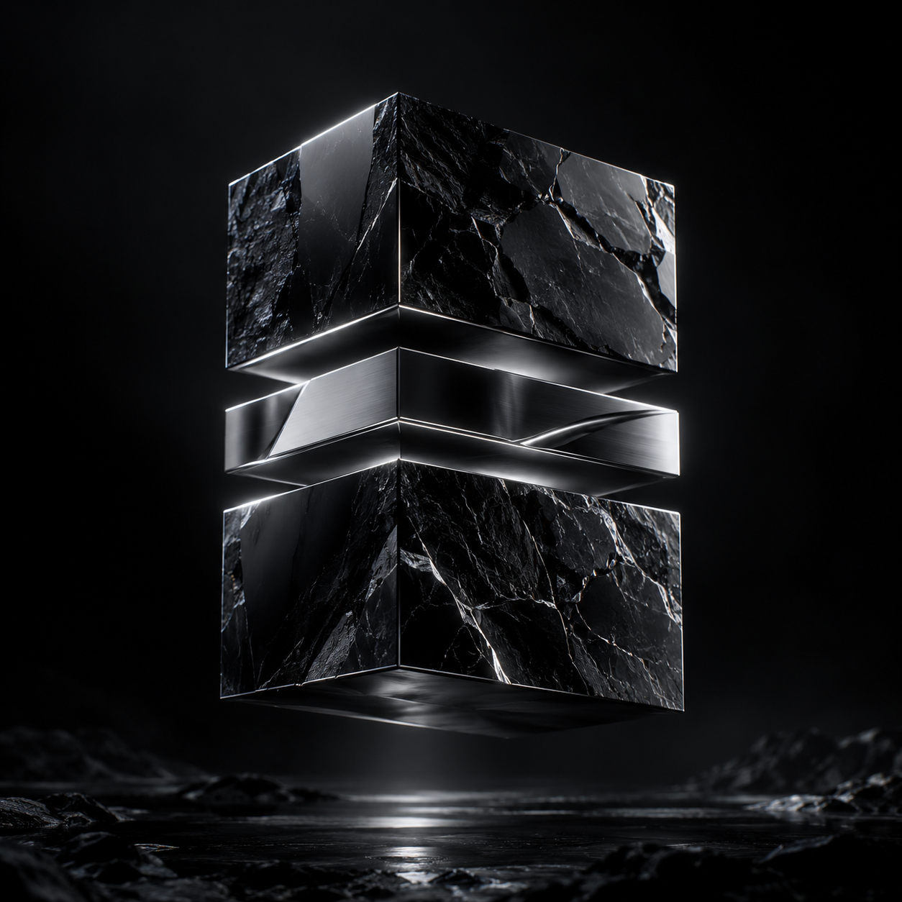
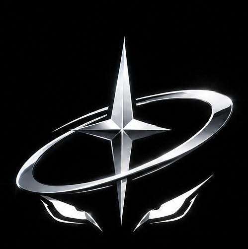
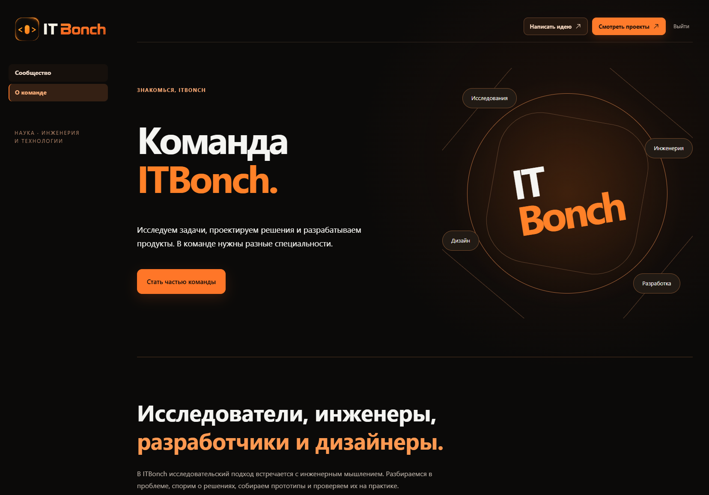

В разработке
SHELL
Платформа, где можно собрать идеи, обсудить их с командой и постепенно превратить в проекты. Мы продумываем среду для совместной работы и развития инициатив.

STRATUMМы — Стратум. Соединяем идеи, код и инженерию, чтобы менять мир вокруг нас.
О компании ↗Стратум — технологическая компания в начале большого пути. Мы хотим превращать смелые идеи в работающие продукты, а разрозненные решения — в связанные системы.
Нас объединяет простая мысль: технология имеет смысл, когда улучшает жизнь. Поэтому начинаем с реальной проблемы, собираем прототип и проверяем его на практике.
Читать манифест Stratum ↓ DOCXИсследуем направления, которые могут стать инфраструктурой завтрашнего дня. Это наше видение и концепции будущих продуктов.
Единое пространство для идей, компетенций и совместной работы. Чтобы знания людей превращались в общие проекты.
Связанные устройства, датчики и программные системы. Исследуем, как объединять данные и автоматизировать повседневные процессы.
Инструменты, которые помогают перейти от информации к результату: меньше рутины, больше времени для решений и творчества.
Подтверждённые достижения, прозрачность данных и переносимые компетенции — основа цифрового взаимодействия, которую мы хотим исследовать.
Хотим объединять людей, помогать развивать их идеи и создавать полезные инструменты. Здесь — SHELL и проекты команды ITBonch.

Платформа, где можно собрать идеи, обсудить их с командой и постепенно превратить в проекты. Мы продумываем среду для совместной работы и развития инициатив.

Команда исследователей, инженеров, разработчиков и дизайнеров. Место для людей, которым интересно разбираться в задачах, собирать прототипы и работать вместе.
Telegram-бот команды ITBonch, который помогает держать фокус на делах. Обсуждает план дня, уточняет сроки, напоминает об обещаниях и возвращается к результатам. В диалоге — конкретные задачи и договорённости.
Для нас Стратум начинается с людей и конкретных задач. Мы хотим собирать команду, проверять идеи на практике и развивать те решения, которые действительно нужны. Поэтому рядом с долгосрочными планами есть небольшие программы и эксперименты — из них складывается опыт.
Константин Качкин · разработчик